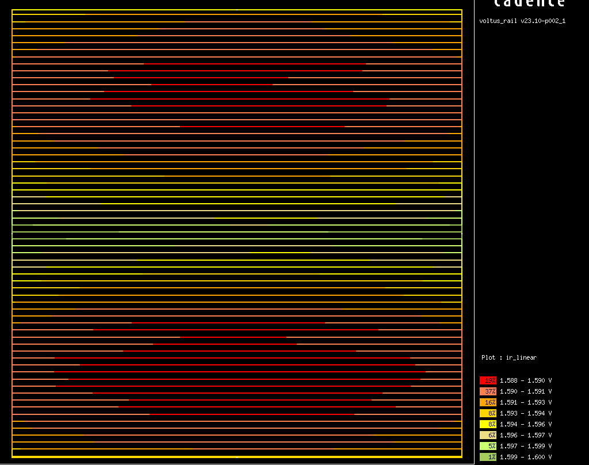

A PicoRV32 RISC-V core on SKY130, built by agentic AI and verified with independent open-source tools
Traceable RISC-V: AI-built, Checked, Evidenced
8.25 ns clock
3 corners: ss / tt / ff
2 flows · 1 constraint file
License
NON-COMMERCIAL ACADEMIC INSTRUCTION AND RESEARCH USE
The released PicoRV32 sky130 design files and results are licensed for non-commercial academic instruction and research. Prior written permission is required for any other use.
The outputs in commercial/ were produced with EDA software licensed to Purdue University for academic instruction and research. The outputs in open/ were produced with open-source tools and verified in part with that software. The license keeps all outputs within that use.
Research collaboration or licensing inquiries about the framework are directed to Raisul Islam — raisul@purdue.edu.
PicoRV32 is a size-optimized RISC-V CPU core by Claire Xenia Wolf, released under the ISC license [1].
The core can be configured as RV32E, RV32I, RV32IC, RV32IM or RV32IMC [1].
On Xilinx 7-series devices, the core runs at 250–450 MHz in 750–2,000 LUTs, with a CPI of about 4 [1]. These figures and the 40-instruction count are externally sourced background, outside this repository's evidence.
PicoRV32 is a general-purpose CPU, and RV32I is the 40-instruction RISC-V base integer ISA [2].
THIS BUILD: DEFAULT PARAMETERS
The default parameters are used: RV32I, with 32 registers and counters [1].
Multiply/divide, compressed instructions and interrupts are not included [1].
Misaligned accesses and illegal instructions cause a trap [1].
Process: the SkyWater SKY130 open 130 nm PDK is used, with sky130_fd_sc_hd cells [3].
[1] github.com/YosysHQ/picorv32 · [2] RISC-V ISA Manual Vol. I (RISC-V International) · [3] github.com/google/skywater-pdk
The design
PicoRV32
The core is a 32-bit RISC-V (RV32I) design by Claire Xenia Wolf, under the ISC license.
SkyWater sky130A
The commercial layout holds 87,237 transistors in 8,273 standard cells of the open sky130_fd_sc_hd library.
8.25 ns · 121 MHz
The clock uncertainty is 0.25 ns at every corner.
ss · 100 °C · 1.60 V
tt · 25 °C · 1.80 V
ff · −40 °C · 1.95 V
COMMERCIAL IMPLEMENTATION (v1.0.1); THE OPEN FLOW IS ON SLIDE 05
Genus
synthesis
→
Innovus
place and route
→
Tempus
timing and SDF
→
Conformal
logic equivalence
→
Voltus
IR
Open checkers are used for physical signoff, so that anyone can re-verify the results: Magic DRC, KLayout DRC (sky130A_mr deck), Magic antenna, LVS with Magic and Netgen, and functional gate-level simulation with partial SDF timing (Icarus Verilog); CVC checks the SDF timing checks.
04 · TRACE-V · PicoRV32 on SKY130
The open flow: same RTL, same constraints
Release v2.0 adds a second build of the same RTL under the byte-identical constraint file: 8.25 ns with 0.25 ns uncertainty, maximum fanout 10, and a half-period I/O delay of 4.125 ns.
OPEN IMPLEMENTATION AND VERIFICATION · LIBRELANE 3.0.14, CLASSIC FLOW
Yosys
synthesis
→
OpenROAD
place and route
→
OpenSTA
timing
→
Conformal
logic equivalence
→
OpenROAD PSM
static IR
480.21 × 490.93 µm
die, 45% configured core utilization
122,928 µm²
standard-cell area including taps; 119,009 µm² excluding taps
10,801
logic cells
144,143
transistors in logic cells
TOOL MODIFICATIONS
Implementation used OpenROAD with private modifications that are not published. The modifications concern timing repair and IR analysis. Every check an outsider runs uses open-source tools, unmodified except OSS-CVC, which is built with the shipped verify/cvc-local-fixes.patch.
The open build is reported to have been implemented with open_pdks 8afc8346 (reported from private runs). A 2026-10-16 readback found the cell LEF and the ss and tt libraries of 8afc8346 and 97d08448 identical, and the ff library and cell model different; 97d08448 was used for all verification.
07 · KLayout renders of both final GDS files, drawn at the same scale
Physical and logical checks, both builds
Check
Commercial (v1.0.1)
Open (v2.0)
DRC, Magic
0 violations
0 violations
DRC, KLayout (sky130A_mr)
0 findings
0 findings
Process antenna, Magic
0 violations (20,800 gates)
0 violations (30,900 gates)
LVS, Magic + Netgen, from the GDS
match; 8,273 devices, 8,492 nets
match; 11,237 devices, 10,944 nets
LEC, RTL → synthesized netlist (Conformal)
equivalent; 1,916 points
equivalent; 1,959 points (FSM encoding files and setup analysis)
LEC, synthesized → routed netlist (Conformal)
equivalent; 1,864 points
equivalent; 1,904 points
DRC, antenna and LVS use the same unmodified open-source tools for both builds. LEC uses Conformal for both builds, and every run reports 0 non-equivalent, aborted or unknown points (released logs: reports/conformal/).
08 · TRACE-V · PicoRV32 on SKY130
Timing, simulation and IR, both builds
Check
Commercial (v1.0.1)
Open (v2.0)
Setup, ss / tt / ff (shipped OpenSTA script)
+0.280 / +2.403 / +2.964 ns
+0.129 / +2.028 / +2.706 ns
Hold, ss / tt / ff (shipped OpenSTA script)
+0.712 / +0.212 / +0.032 ns
+0.744 / +0.235 / +0.054 ns
Flow's own signoff timer
Tempus: setup ss +0.180 ns, hold ff +0.034 ns
nine-corner signoff: private open-tool runs, not released
Both builds use the same RTL and the same constraint file (8.25 ns, 0.25 ns uncertainty), and the slack includes the uncertainty. The IR budget is 80 mV. The IR figures come from different tools; the modified PSM on the commercial layout gives 12.09 / 12.07 mV. No general agreement between the tools is claimed.
09 · TRACE-V · PicoRV32 on SKY130
The two builds side by side
Commercial (v1.0.1)
Open (v2.0)
Clock / constraints
8.25 ns, identical SDC
8.25 ns, identical SDC
ss setup (shipped OpenSTA, nominal RC)
+0.280 ns
+0.129 ns
ff hold (shipped OpenSTA, nominal RC)
+0.032 ns
+0.054 ns
Die
357.42 × 355.64 µm
480.21 × 490.93 µm (45% configured utilization)
Logic transistors
87,237
144,143
DRC / antenna / LVS
0 / 0 / match
0 / 0 / match
Static IR (worst)
11.0 / 11.58 mV (Voltus, quoted)
5.55 / 5.57 mV (PSM)
Equivalence
RTL → netlist → routed (Conformal)
RTL → netlist → routed (Conformal)
The IR figures come from different tools. The PSM method, run on the commercial layout, gives 12.09 / 12.07 mV. This does not establish general agreement between the tools.
Both builds use the same RTL and the same constraint file. Conformal and Xcelium are used for both builds: the open equivalence method did not prove RTL to netlist for this design (586 of 1,864 compare points proven, 1,278 unproven), and Icarus Verilog does not evaluate timing checks. The open implementation uses no commercial tool.
11 · TRACE-V · PicoRV32 on SKY130
MODIFIED OPEN-SOURCE TOOLS
Where the open-source tools were changed
OpenROAD Resizer: repair
After routing, electrical and timing repair use the extracted parasitics, including zero-length shunt capacitances. The replaced estimate under-counted wire load 2.2 to 2.4 times on the nets of a parasitic probe (a development record, not released here). Driver sizing uses the corner model and the SDC slew limit.
OpenSTA in OpenROAD: parasitics
The SPEF reader and parasitic store give the Resizer the extracted RC network in a form its buffering model can use; constraint checks ignore empty exception entries.
OpenROAD PSM: static IR
Voltage sources can sit on each power pin's own routing layer as well as on the top layer.
LibreLane: flow integration
A post-route loop repairs electrical, setup and hold violations against fresh extraction, and the flow fails when a stated setup target is missed.
Yosys and ABC, Magic, KLayout, Netgen and Icarus Verilog were not modified. The changes are private and not published.
12 · TRACE-V · PicoRV32 on SKY130
Stock OpenROAD on the same block
8.25 ns, same RTL, reference configuration, default SDC
Stock LibreLane 3.0.14 / OpenROAD (development record, not released here)
Setup, max_ss / nom_ss
−2.053 / −1.672 ns
Slew / cap / fanout violations, max_ss
3,104 / 33 / 30
Modified OpenROAD, same configuration
values not located; withdrawn
Static IR on the commercial layout
VPWR / VGND worst
Cadence Voltus (as quoted in the record)
11.0 / 11.58 mV
PSM, unmodified, default sources
46.4 / 47.0 mV
PSM, unmodified, sources at Voltus's pin locations
36.8 / 34.8 mV
PSM, modified, sources on each pin's layer
12.09 / 12.07 mV
The stock rows use the LibreLane reference configuration with the default SDC. The modified-run values previously shown beside them were not located and are withdrawn; no matched stock-versus-modified comparison is claimed. The release build closes under the commercial SDC. Every shipped check passes except the open package's CVC negative control, which fails functionally with 0 timing violations (see the errata).
13 · TRACE-V · PicoRV32 on SKY130
Software developed for this work
Modified open-source tools
The changes are in OpenROAD Resizer repair, the OpenSTA parasitics inside OpenROAD, OpenROAD PSM and the LibreLane flow integration. They are private and not published.
Adapters used for this release
The commercial flow uses Genus, Innovus, Tempus, Voltus and Conformal adapters behind an evidence registrar and ledger. The open flow uses recorded LibreLane runs, the Conformal set-up for the open netlist, PSM runs with controls and the ECO diode run. Both use the shipped verify/ scripts.
Developed alongside
An open equivalence adapter over Yosys and ABC was run on this design and gives only the negative result on slide 11. An open static-IR adapter over PSM, and a LibreLane runner and pre-flight plugin that read every setting back, are not the source of any released number.
Results were recorded in a ledger and the runs were frozen with checksum manifests; the failure handling of the verify scripts is tested offline.
14 · TRACE-V · PicoRV32 on SKY130
How the platform works
01
Requirements and implementation
The requirements were set once by the designer; synthesis, place and route, signoff and debugging were carried out by agentic AI.
02
Traceable figures
Figures cite the run that produced them; released evidence files carry provenance records.
03
Checksummed historical runs
75 manifest entries in eight historical manifests (a reconstruction; checked on 16 October 2026: 75 checked, 0 mismatches).
04
Key checks have controls
Key checks were run on a known-bad input: a 5 pF overload, a known-bad layout, a 4 ns clock. This shows the stated responses in those runs, not that every checker detects every damaged input.
05
No silent passes
A check that cannot run is recorded as a failure.
06
Independent checkers
Layouts built by Innovus are checked by Magic, KLayout and Netgen; LEC links the routed netlist back to the RTL.
15 · TRACE-V · PicoRV32 on SKY130
16 · TRACE-V · PicoRV32 on SKY130
DEFECTS FOUND DURING SIGNOFF
Commercial flow: six defects that passed the tools' own reports
Each result was read back from the design and compared with the requirement.
Results that should agree were compared.
Key checks were run on a known-bad input.
Defect 1: the fanout limit was ignored
A maximum fanout of 10 was set in the SDC. Innovus finished with a fanout violation, and the flow completed normally.
fanout violation after the fix
violation cleared
clock-tree buffers
more buffers
insertion delay (CTS average)
longer
The before and after counts, buffer numbers and delays shown in v2.0.1 are withdrawn: no supporting report was located.
HOW IT WAS FOUND
The fanout count was read back from the routed design and compared with the limit declared in the SDC. Signoff was refused on the violation, although Innovus reported success.
The two settings that Innovus needs (optimizer and clock-tree fanout repair) were found by agentic AI, the route was re-run, and the violation is gone.
17 · TRACE-V · PicoRV32 on SKY130
Defect 2: STA passed, simulation trapped
mem_ready → reg_op1
negative slack
The interface was timed as the testbench drives it: memory is driven on the falling edge, which leaves half a cycle.
After the fanout fix, setup was met by STA at 8 ns, but the post-layout simulation trapped at 8 ns.
An instruction that had been given correctly was misread by the core.
The cause was the absence of input and output delays in the SDC, so the memory interface was given a full cycle by STA instead of the testbench's half cycle.
HOW IT WAS FOUND
Two results contradicted each other: STA met, simulation failed. The STA pass was not accepted. The wrong transaction was traced by agentic AI, the interface was timed the way the testbench drives it, and the constraint was fixed instead of the test.
After the re-run, the simulation passes at 8 ns and the input-port hold violations are gone (the earlier slack values are withdrawn: no report located).
18 · TRACE-V · PicoRV32 on SKY130
Defects 3 and 4: faults in the checks themselves
DEFECT 3
The gate-level simulation was all-X
The supplies of the power-aware cell models were unconnected, so every simulation failed, at every clock.
CONTROL
The defect was found by a zero-delay positive control: the same netlist with no delays must pass.
DEFECT 4
The antenna check could not fail
The initial negative control contained a diode that was not needed, so the check passed it.
FIX
The control was replaced by a frozen known-bad layout that must fail.
HOW THEY WERE FOUND
Key checks carry a control that they must pass or fail. When a control misbehaved, the check was marked unproven instead of clean, and the check itself was repaired by agentic AI before any result from it was trusted.
19 · TRACE-V · PicoRV32 on SKY130
Defects 5 and 6: found in the 8.25 ns re-run
DEFECT 5
A cell excluded from synthesis was re-inserted by place and route.
The and2_0 cell was excluded in Genus, but Innovus restructuring re-inserted it. One instance abutted a neighbor and produced a KLayout npc.2 spacing violation, while Magic DRC was clean (the spacing values are withdrawn: no report located).
FOUND AND FIXED
The defect was found by the second DRC deck. It was fixed by applying the exclusion in Innovus as well, with a post-route count of excluded cells that must be zero.
DEFECT 6
An antenna violation remained after the router's repair.
One net was left at a ratio of 403.85 against a limit of 400 (Magic antenna log of a development run, reports/development/).
FOUND AND FIXED
The defect was found by the open antenna check. It was fixed by changing the router's antenna repair setting.
20 · TRACE-V · PicoRV32 on SKY130
Defects found and fixed in the v2.0 work
CONSTRAINT MISMATCH
The open flow initially used LibreLane's default SDC.
Its I/O delay differed from the commercial SDC's. Timed under the commercial SDC, that build failed ss setup at the input resetn (the values are withdrawn: no report located).
FOUND AND FIXED
The build was re-run under the identical SDC, and it closes.
FRAGILE CLOSURE
A closure did not survive a small placement change.
Before the timing-repair modification, an 8.25 ns closure failed after a small change of the wire-length weight (the values are withdrawn: no report located).
FOUND AND FIXED
After the modification, the same perturbation passed (value withdrawn).
ANTENNA CHECKERS
OpenROAD reported 0 antenna violations; Magic flagged gates on the candidate layouts.
The cause and the proof are on the next slide.
FOUND AND FIXED
On the release layout, two diodes were added with a stock ECO step; the shipped DEF holds 494 diodes.
EQUIVALENCE SETUP
A plain key-point comparison could not prove equivalence.
Re-encoded state machines and constant registers left non-equivalent points: 1,246 without the FSM encoding files, 1,202 in the stage-1 plain run.
FOUND AND FIXED
Three setup steps resolve it, with a control (slide 23).
Verification environment: with a newer PDK than the pinned open_pdks 97d08448, the diode cells failed LVS, so the README pins that version.
21 · TRACE-V · PicoRV32 on SKY130
Two antenna checkers disagreed
OpenROAD reported 0 antenna violations on the routed open builds. Magic, which the shipped scripts run, flagged gates on earlier candidate layouts (the counts given in v2.0.1 are withdrawn: no report located).
494
diodes in the shipped DEF (counted in reports/development/final-diode-count.json)
0
Magic antenna violations on the release layout (shipped check)
2
ECO diode targets in the recorded configuration (reports/implementation/config.json)
CAUSE
Magic counts metal3 that reaches a gate through metal4 alone as connected at the metal3 step. This is the project's diagnosis of the disagreement. The net-level ratios and the copy-of-layout experiment behind it have no located report and are withdrawn.
FIX
Two diodes were inserted with LibreLane's stock Odb.InsertECODiodes step, and the shipped Magic check reports 0 violations. A larger patched mode was considered and not used (its figures are withdrawn).
22 · TRACE-V · PicoRV32 on SKY130
Equivalence of the open build: three setup steps
Yosys re-encodes state machines and leaves registers that the default configuration never uses. A plain key-point comparison against the RTL cannot prove equivalence. Conformal LEC 24.10 proves it after three steps.
STEP 1
Flip-flops renamed after their RTL registers.
The renaming script asserts that cells and connections are identical.
RESULT
Names change; cells and connections stay identical.
STEP 2
FSM encoding files for two state registers.
cpu_state: 8-bit one-hot to 7-bit one-hot. mem_wordsize: 2-bit binary to 3-bit one-hot.
CONTROL
Without these files, 1,246 points are non-equivalent (setup record).
STEP 3
Conformal setup analysis.
77 RTL registers were merged (duplicates and registers the default configuration never uses), and 5 were treated as constants.
RESULT
Equivalent: 1,959 points, 0 non-equivalent, aborted or unknown.
The Yosys netlist is also equivalent to the routed netlist of the final layout: 1,904 points, 0 non-equivalent.
23 · TRACE-V · PicoRV32 on SKY130
What it cost
Accounting window: 1 to 7 October 2026, ending 16:15:04 EDT. 2,907 calls. Tokens: 6,524 uncached input, 1,261,596 output, 31,934,690 cache-creation and 891,055,522 cache-read.
Interaction: 86 messages, 3.14 hours under the 20-minute rule, 7 days.
Scheduler: 62 jobs with 5.14 hours of summed job elapsed time (not CPU-hours, and not the duration of the project). The seven-job implementation pass totals 37 min 35 s of job time over a 42 min 56 s span.
The totals can include concurrent work outside this design and are an upper-bound attribution. Data and method: reports/accounting/. A claim of 21 further jobs and 2.0 hours is withdrawn: no dataset was located.
24 · TRACE-V · PicoRV32 on SKY130
Commercial build: static IR drop, 11.0 mV on VPWR (quoted)
11.0 / 11.58 mV
VPWR / VGND drop, quoted from the Voltus run in the PSM comparison record
80 mV each
stated budget, 5% of 1.6 V
1.588–1.600 V
legend range of the VPWR map, 8.25 ns route
The Voltus power report (12.98 mW) records 20% primary-input activity. The IR-drop report itself is not released.

25 · TRACE-V · PicoRV32 on SKY130
Commercial build: RC cross-check
The cross-check was run with an independent extractor, OpenRCX, and with OpenSTA: ss setup at 8.25 ns.
Nominal RC
+0.55 ns
Max RC
+0.34 ns
Max RC costs 0.21 ns.
The ff hold with min RC is +0.03 ns, which is met. OpenSTA on the Innovus SPEF gives +0.28 ns in the same record.
Signoff extraction is at nominal RC, because the Cadence sky130 kit provides a typical extraction file.
This is a cross-tool heuristic, not a measurement: subtracting the 0.21 ns from the separate Tempus +0.180 ns margin gives −0.030 ns, and adding that deficit to 8.25 ns gives 8.28 ns, about 8.3 ns, if period and slack change one for one. It is not a measured max-RC requirement.
26 · TRACE-V · PicoRV32 on SKY130
Limitations
1
Commercial build: signoff is at nominal RC; the max-RC estimate is given on slide 26.
2
Both builds: the I/O timing is set to the testbench's half-cycle memory protocol. The look-ahead, co-processor and trace outputs (mem_la_*, pcpi_valid, pcpi_insn, pcpi_rs1, pcpi_rs2, eoi, trace_*) have no output-delay constraint; the PCPI inputs have input delays.
3
Commercial build: the margins are thin, ss setup +0.180 ns and ff hold +0.034 ns, after 0.25 ns uncertainty.
4
The post-layout simulation runs one 9-instruction program covering 6 of 40 RV32I opcodes. Logic equivalence concerns the configured design; STA covers the paths constrained by the shipped SDC, not every interface.
5
Open build: static IR comes from OpenROAD PSM with private modifications, and no Voltus run exists on the open layout. Its Conformal and Xcelium results are not regenerated by the open scripts; the timing-checked simulation is reproduced with CVC.
Scope: Packaging, electromigration, metal fill, pad frame, foundry precheck and dynamic IR were outside the scope of this block-level release.
27 · TRACE-V · PicoRV32 on SKY130
Sources
[1]
C. X. Wolf, PicoRV32, github.com/YosysHQ/picorv32.
[2]
A. Waterman, K. Asanović (eds.), The RISC-V Instruction Set Manual, Vol. I, RISC-V International.
[3]
SkyWater SKY130 PDK, github.com/google/skywater-pdk, built with open_pdks 1.0.471 (github.com/RTimothyEdwards/open_pdks).
Each build was signed off at three corners with 0.25 ns clock uncertainty.
DRC was run with two independent decks, LVS against the routed netlist, and logic equivalence at both synthesis and routing.
Post-layout gate-level simulation was run with flop timing checks, and static IR was analyzed.
The failure handling of the verify scripts is tested offline.
Reported figures cite released evidence files with checksums; figures without a located report are withdrawn.
The released package provides scripts and evidence for the checks in its verification table. Icarus results are functional simulation with partial SDF timing; CVC is the timing-check simulator of record. Commercial-tool results are released as historical evidence and are not regenerated by the scripts; private development, implementation reconstruction and externally sourced background are outside the reproduction guarantee. This is a block-level worked example and is not fab-ready.